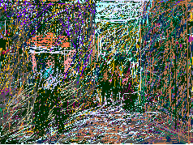
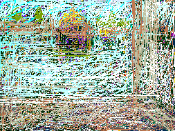
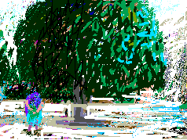
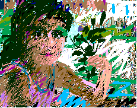
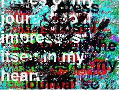

JERUSALEM ALQUDS: SING THE CHILDREN OF PALESTINE

Outside the mosque, as a working teenager passed carrying a heavy load. Other boys gave me sagacious hints on avoiding seeming like a tourist. Thus I camouflaged my New York dress and gained access to the mosque grounds now paradoxically guarded by Israelis. Very savvy, the boys had known better than I the implications of this assertion. They encouraged and prodded me. After all this is our home -- theirs and mine. Thus I sat in the light-flooded expanse contemplating this Dome Of The Rock -- this heart of Jerusalem -- which used to be open and

After the blinding sunshine, first darkness inside the dome changed slowly like dawn into an exquisite orchestra of light and shadow. It is the most beautiful architectural interior in my experience. The quietness of the worshipers accented my sensations of wonder and aesthetic pleasure. How did it feel to be in a place of beauty and order and immediately unexpectedly meet depraved Israeli terrorism that day when Baruch Goldstein massacred 29 Palestinians dead on February 25, 1994?

Leaving the Dome to the adjacent Al-Aqsa I saw a man wearing a green skirt and I noticed the unarmed Palestinian guards also in green. Clearly they were under the command of Israeli guards who were dressed in blue, labeled in Hebrew, and very obviously armed. As I tried to enter Al-Aqsa the green guards finally stopped me. They did not want to let this modern Palestinian woman enter the mosque until the hour alloted for tourists; but then they relented.

Later a girl, a daughter of the mosque staff, came and sat next to me and gave me a white rose. I asked her about the Israeli guards and about the soldiers just then coming to formation on the grass. She said, yes these Israeli guards are arrogant and the soldiers do go inside the mosque at tourist time and it is deeply resented. She said everyone is afraid of them even though they pretend not to be. I asked about the green skirt. She said skirts are for male tourists who come wearing shorts. We laughed. She invited me to her house.

Now, autumn 1995, as I touch this rose presses between the pages of my journal I am listening to the mass media tell of a very different memento. It seems that the terrorist Yitzak Rabine was assassinated by one of his own pit bulls, Yigal Amir. This murderer comes from the same settlement as the murderer Baruch Goldstein. There, on land stolen from Palestinians, they have engraved a stone with words saying that he has a pure heart and clean hands. Tell me who eulogizes murderers? The true heroes are the beautiful children of the Palestinian working class -- children of the INTIFADAH. I remember their ethics, solid like rocks, and their precious tenderness like saplings between those rocks.
My Grandmother... The Town of Beisan... The Arab City of Jerusalem... Sabah Told Me... My Home in Yafa... Khader Told Me... Olives of Palestine... Our Students... A Taxi Ride in Bethlehem... Written by Doctor Fathihe Saudi... Hasan Told Me... A Visit to Kafr Qasem... The Artist of Kafr Qasem... The Massacre at Kafr Qasem (not yet ready)
Tayseer Barakat, painter... Rana Bishara, painter and installation artist... Sari Khouri, painter... Abdel Tamam, painter... Vera Tamari, ceramist and painter... Adnan Yahya, painter and graphic artists...